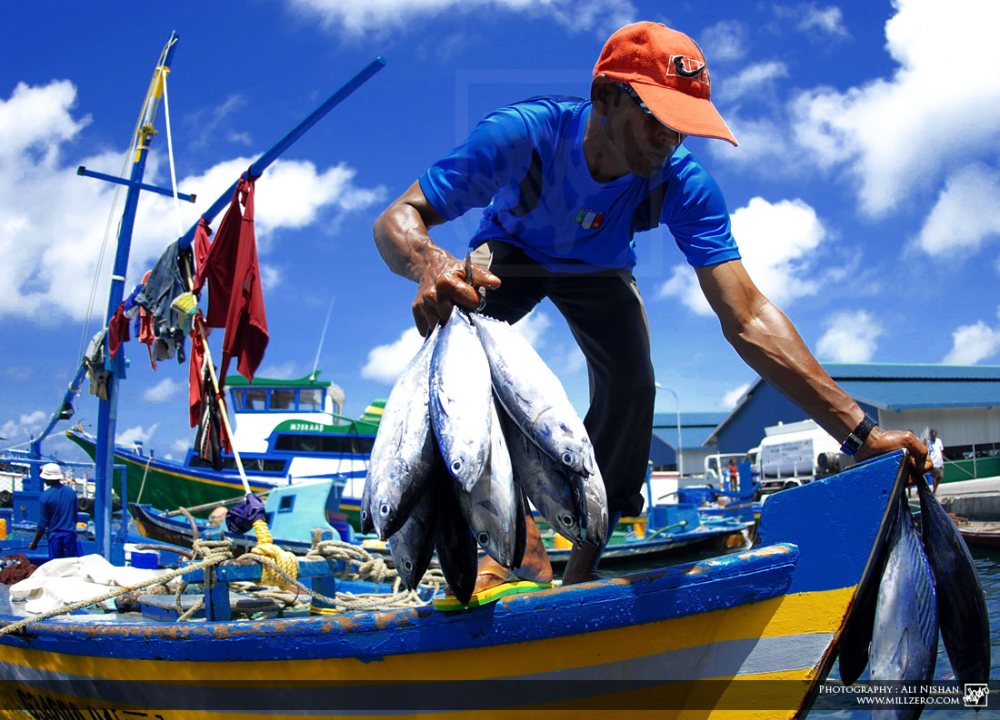

PROJETO E EMPRESAS QUE SEGUEM A ODS 12
Ir para baixo
Próxima Página

Algumas empresas que se destacam nesse objetivo:
1 Unilever(Sustentábilidade das Embalagens, Uso Eficiênte de Recursos, Redução de Disperdicio.)
2 Patagonia(Uso de Materiais Sustentáveis, Reciclagem e Reparo, Transparência e Etica e Iniciativas Ambientais.)
3 IKEA (Uso de materiais Sustentáveis, Eficiência Energética, Reciclagem e Redução de Disperdício e Desing para Sustentábilidade.)
4 Nestlé(Redução de Disperdicio, Embalagens Sustentáveis, Uso Sustentável da Água e Transparência e Responsabilidade.)
5 Microsoft(Energia Renovável, Redução de Emissões, Eficiência Energética e Reciclagem e Reuso.)
6 Apple (Uso de Materiais Reciclados, Eficiência Energética, Transparência e Responsabilidade de Suprimento.)
7 Danone(Sustentábilidade das Embalagens, Uso Eficiênte da Água, Redução de Emissões.)
8 Philips (Eficiência Energética, Sustentábilidade nas Operações, Economia Circular e Transparência e Responsabilidade.)
9 Tesla (Energia limpa, Eficiência Energética, Reciclagem de Materiais e Produção sustentável.)
10 Coca-Cola (Redução de desperdicio, Reciclagem, Eficiência Energética e Uso Sustentável da Água.)